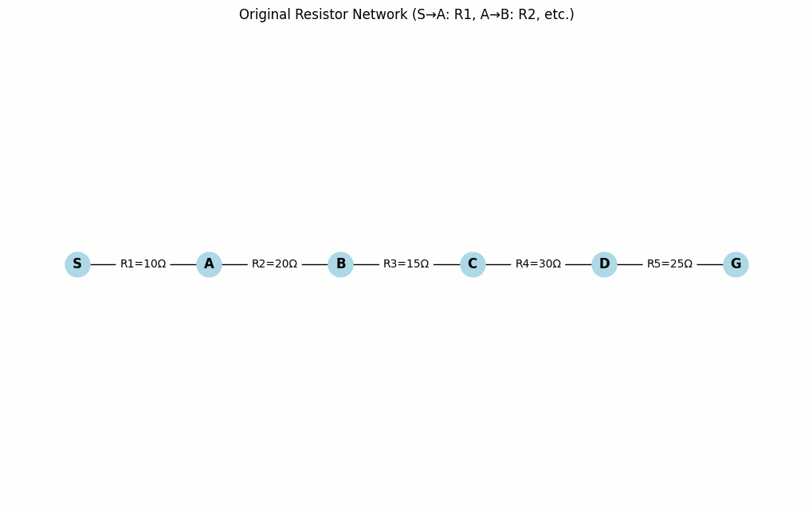

Problem 1
1. Series and Parallel Circuits: Resistors and Capacitors
1.1 Resistors
Series: Resistors are connected end-to-end, forming a single current path. The equivalent resistance is:
Parallel: Resistors share the same nodes, providing multiple current paths. The equivalent resistance is:
1.2 Capacitors
Series: Capacitors share the same charge, reducing effective capacitance:
Parallel: Capacitors share the same voltage, adding capacitances:
1.3 Simplifying Complex Circuits
Consider a circuit with resistors \(R_1 = 10 , \Omega\) and \(R_2 = 20 , \Omega\) in parallel, in series with \(R_3 = 15 , \Omega\), and another parallel branch with \(R_4 = 30 , \Omega\) and \(R_5 = 60 , \Omega\).
Parallel branch (\(R_1\), \(R_2\)):
Series with \(R_3\):
Parallel branch (\(R_4\), \(R_5\)):
Combine \(R_{123}\) and \(R_{45}\) in parallel:
For capacitors, e.g., \(C_1 = 10 , \mu\text{F}\) and \(C_2 = 20 , \mu\text{F}\) in series:
1.4 Algorithm for Equivalent Resistance/Capacitance
Identify topology: Group components into series or parallel combinations. Apply formulas:
Resistors: Series (\(R_1 + R_2\)), Parallel (\(1/R_{\text{eq}} = 1/R_1 + 1/R_2\)). Capacitors: Series (\(1/C_{\text{eq}} = 1/C_1 + 1/C_2\)), Parallel (\(C_1 + C_2\)).
Simulation of Equivalent Resistance(series)

Simulation of Equivalent Resistance(Parallel)

Iterate: Replace each combination with its equivalent until a single value remains. Advanced cases: Use nodal/mesh analysis or software (e.g., SPICE) for complex circuits. Circuit Simplification ExamplemarkdownPokaż inline
2. Kirchhoff’s Laws
2.1 Kirchhoff’s Current Law (KCL)
KCL states that the total current entering a junction equals the total current leaving it:
2.2 Kirchhoff’s Voltage Law (KVL)
KVL states that the sum of voltage drops around a closed loop is zero:
2.3 Example Circuit Analysis
Consider a circuit with:
Loop 1: 12 V battery, \(R_1 = 4 , \Omega\), \(R_2 = 6 , \Omega\) (shared). Loop 2: \(R_2 = 6 , \Omega\), \(R_3 = 8 , \Omega\), 6 V battery. Junction: Currents \(I_1\) (Loop 1), \(I_2\) (Loop 2), \(I_3\) (through \(R_3\)).
Equations:
KCL: \(I_1 = I_2 + I_3\) KVL Loop 1: \(12 - 4I_1 - 6I_2 = 0 \implies 12 = 4I_1 + 6I_2\) KVL Loop 2: \(-6I_2 - 8I_3 + 6 = 0 \implies 6 = 6I_2 + 8I_3\)
Solution:
From KCL: \(I_3 = I_1 - I_2\) Loop 2: \(6 = 6I_2 + 8(I_1 - I_2) \implies 3 = 4I_1 - I_2\) Loop 1: \(12 = 4I_1 + 6I_2 \implies 2 = \frac{2}{3}I_1 + I_2\) Solve:
\(I_2 = 2 - \frac{2}{3}I_1\) \(3 = 4I_1 - (2 - \frac{2}{3}I_1) \implies 5 = \frac{14}{3}I_1 \implies I_1 \approx 1.07 , \text{A}\) \(I_2 \approx 1.29 , \text{A}\), \(I_3 \approx -0.22 , \text{A}\)
Kirchhoff’s Laws Circuit SolutionmarkdownPokaż inline
3. Time Evolution in RL, RC, and RLC Circuits
3.1 RC Circuit
For a DC source, capacitor voltage is:
Current: \(I(t) = \frac{V_0}{R} e^{-t / RC}\), where \(\tau = RC\).
3.2 RL Circuit
Current: \(I(t) = \frac{V_0}{R} (1 - e^{-t / (L/R)})\) Inductor voltage: \(V_L(t) = V_0 e^{-t / (L/R)}\), where \(\tau = L/R\).
3.3 RLC Circuit
Differential equation:
Solutions:
Underdamped: \(I(t) = e^{-\alpha t} (A \cos(\omega_d t) + B \sin(\omega_d t))\), \(\alpha = R/(2L)\), \(\omega_d = \sqrt{\frac{1}{LC} - \alpha^2}\). Critically damped: Fastest non-oscillatory decay. Overdamped: Slow decay.
4. Ohm’s Law
Ohm’s Law: \(V = IR\). Voltage is proportional to current for a fixed resistance. Applied to each component in complex circuits after simplification.
5. Capacitors and Inductors
5.1 Capacitors
Store charge: \(Q = CV\), current: \(I = C \frac{dV}{dt}\).
Series: \(1/C_{\text{eq}} = \sum 1/C_i\) Parallel: \(C_{\text{eq}} = \sum C_i\)
5.2 Inductors
Store energy in magnetic field: \(V = L \frac{dI}{dt}\).
Series: \(L_{\text{eq}} = \sum L_i\) Parallel: \(1/L_{\text{eq}} = \sum 1/L_i\)
Applications: Capacitors in filters, inductors in transformers.
6. AC vs. DC Circuits
6.1 Definitions
DC: Constant voltage/current. AC: Sinusoidal, \(V(t) = V_p \sin(\omega t)\).
6.2 RMS Values
RMS voltage: \(V_{\text{rms}} = \frac{V_p}{\sqrt{2}}\) RMS current: \(I_{\text{rms}} = \frac{I_p}{\sqrt{2}}\). Power: \(P = V_{\text{rms}} I_{\text{rms}} \cos\phi\).
7. PN Junction
A PN junction forms between p-type and n-type semiconductors. The depletion zone arises from carrier recombination, creating a barrier that controls current flow (forward bias allows, reverse bias blocks).
8. Diodes and Transistors
8.1 Diodes
Allow current in one direction, used in rectification.
8.2 Transistors
NPN: Current flows from emitter to collector when base-emitter is forward-biased. PNP: Opposite polarity. Used in amplification/switching.
9. Impedance
Impedance \(Z\):
Resistive: \(Z_R = R\) Capacitive: \(Z_C = \frac{1}{j \omega C}\) Inductive: \(Z_L = j \omega L\) Series: \(Z_{\text{eq}} = Z_1 + Z_2\) Parallel: \(1/Z_{\text{eq}} = 1/Z_1 + 1/Z_2\)
10. Resonance in RLC Circuits
Resonance occurs when \(X_L = X_C\):
Impedance is resistive, maximizing current. Used in tuners/filters.